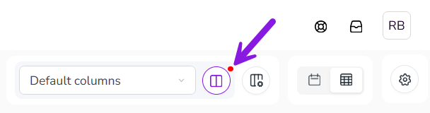
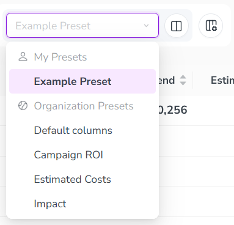
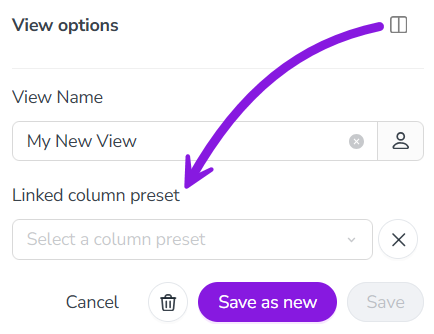

Save Summary table columns as presets
You can use Column Presets to save your customized table column settings in the Summary display mode. Saving column settings as a column preset lets you quickly and easily apply the same settings again at any time. This makes them a useful shortcut if you have different column configurations that you frequently need to switch between.
You can:
Save your current customized column configuration in the Summary display mode as a column preset at any time.
Select a previously created column preset to quickly apply its saved column configuration again.
Optionally, link column presets to views (saved display settings, like filters or color-coding) to also automatically apply a linked column preset when the view is selected.
Create column presets
After you customize the table column configuration in the Summary display mode, you can save the configuration as a column preset.
You can create as many column presets as you need. Whenever you select a column preset later, the column configuration saved to the preset is immediately applied again.
Create a new column preset
In the
 Activities section, set the Timeline/Summary toggle to the
Activities section, set the Timeline/Summary toggle to the  Summary setting.
Summary setting.Click Configure Columns, and use the Configure Columns panel to customize the columns in the Summary table. After you modify the column configuration, a badge is displayed on the Column Preset Options button to indicate that you can save the column configuration as a column preset:

Click Column Preset Options. The Preset Options panel opens.
Type a name for your new preset into the Column Preset Name field.
Optional: If you are an administrator, you can set the new preset to be available to all users in your Uptempo instance:
Click
 Only for me on the Preset Name field, then select
Only for me on the Preset Name field, then select  For my organization instead.
For my organization instead.
To finish creating your new column preset, click Save as new. The Preset Options panel closes, and your new view now appears in the Select Column Preset menu:

You have saved your custom column configuration as a column preset, and can now select the column preset at any time to apply the saved column configuration.
Copy column presets
You can also create a new column preset by copying an existing column preset.
Copy an existing column preset
Apply the column preset you want to copy (see Apply column presets).
Click Column Preset Options and enter a new name into the Column Preset Name field.
To finish copying the column preset, click Save as new.
The resulting column preset will have the same column configuration as the column preset it was copied from, and you can use this as a base to make additional changes (see Edit column presets).
Apply column presets
After you have created a column preset, you can quickly recall the saved column configuration in the Summary display mode by applying the preset.
Apply an existing column preset
In the
Activities section, click the Select Column Preset menu to see available column presets. Column presets are displayed in two sections:- My Presets
Lists personal column presets that you have created yourself. If you have not created any column presets yet, this section is hidden.
- Organization Presets
Lists column presets created by administrators for all users in your Uptempo instance. This section is always visible.
Click on the column preset you want to use to apply it.
The column configuration saved in the preset is immediately applied to the Summary table.
Edit column presets
After you have created a column preset, you can make changes to it at any time, such as changing its name and saved column configuration.
If you are an administrator, you can also convert an  Only for me column preset into a
Only for me column preset into a  For my organization column preset (and vice versa).
For my organization column preset (and vice versa).
Rename a column preset
In the Summary display mode, use the Select Column Preset menu to select the column preset you want to rename.
Click Column Preset Options. The Column preset options panel opens.
Type the new name for the column preset into the Column Preset Name field.
To apply your changes, click Save changes.
You have renamed the column preset, and it will be displayed in the Select Column Preset menu under its new name.
Change a column preset's saved column configuration
In the Summary display mode, use the Select Column Preset menu to apply the column preset you want to modify.
Click Configure Columns, and use the Configure Columns panel to customize the columns in the Summary table. After you modify the saved column configuration, a badge is displayed on the Column Preset Options button to indicate that there are unsaved changes.
Click Column Preset Options. The Column preset options panel opens.
To save the new column configuraton to the selected column configuration, click Save changes.
You have changed the column preset's saved column configuration, and the new column configuration will be used whenever you apply the column preset from now on.
Change a column preset's type (for administrators)
As an administrator, you can change a column preset's type from  Only for me to
Only for me to  For my organization (and vice versa).
For my organization (and vice versa).
In the Summary display mode, use the Select Column Preset menu to select the column preset for which you want to change the type.
Click Column Preset Options. The Column preset options panel opens.
Click the currently set column preset type (
Only for me or For my organization) beside the Column Preset Name field. Click the view type that is not currently selected to change to it.To apply your changes, click Save changes.
Delete column presets
If you no longer need a column preset, you can delete it at any time.
Delete a column preset
In the Summary display mode, use the Select Column Preset menu to select the column preset you want to delete.
Click Column Preset Options. The Column preset options panel opens.
Click
 Delete preset.
Delete preset.To permanently delete the column preset, click Delete in the confirmation dialog.
The Summary table reloads with the next available column preset applied (if any), and the deleted preset no longer appears in the Select Column Preset menu.
Link column presets to views
If you frequently use a column preset with a particular view, you can link the preset to the view. When a column preset is linked to a view, selecting the view also automatically applies the column preset at the same time.
Link a column preset to a view
In the
Activities section, use the Select View menu to select the view you want to link to a column preset.You can do this in either the Timeline or Summary display modes.
Click
 View Options. The View Options panel opens.
View Options. The View Options panel opens.Click Link a column preset to this view. The Linked column preset menu is displayed.

Use the Linked column preset menu to choose the column preset you want to link to the selected view.
To finish linking the column preset to the view, click Save changes.
The column preset is linked to the view. When you select this view, the linked column preset will also be applied automatically.
Unlink or change the linked column preset on a view
In the
Activities section, use the Select View menu to select the view on which you want to unlink or change the column preset.You can do this in either the Timeline or Summary display modes.
Click
View Options. The View Options panel opens.Click Link a column preset to this view. The Linked column preset menu is displayed:
To change the linked column preset: Use the Linked column preset menu to select the new column preset you want to link to the view.
To unlink the currently linked column preset. Click Remove on the current selection in the Link view to column preset menu.
To apply your changes, click Save changes.
You have unlinked or changed the column preset on a view. Your changes take effect immediately.